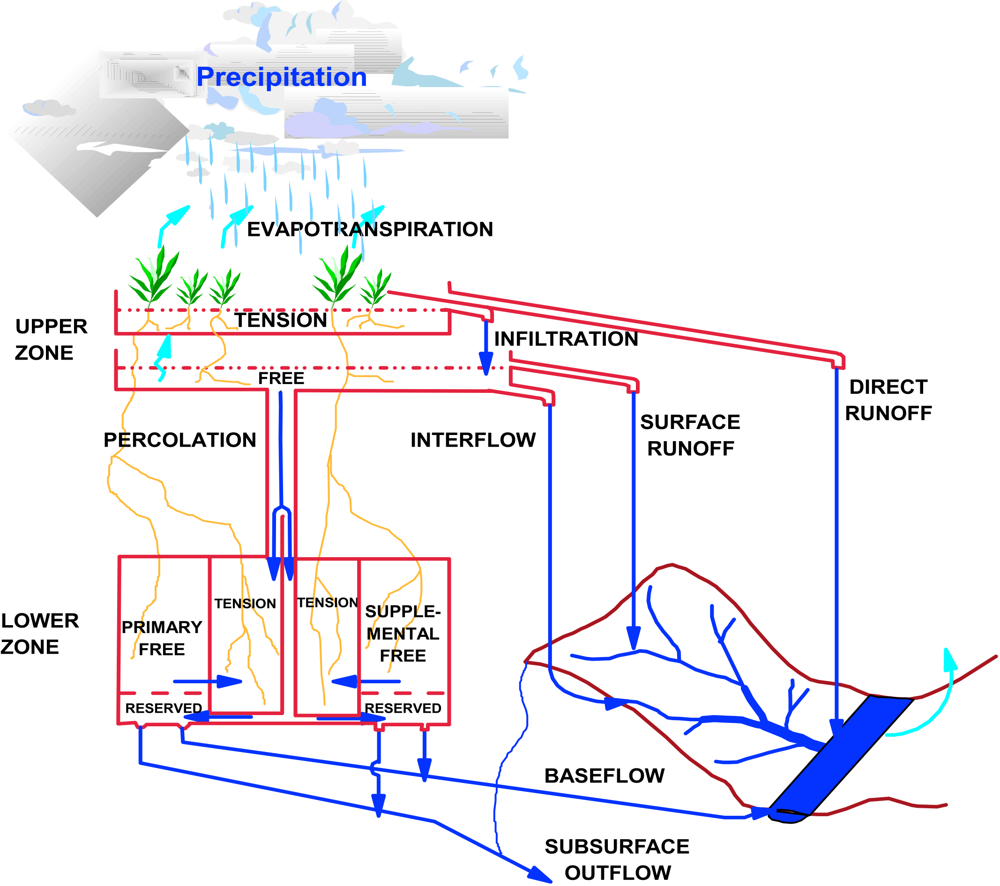
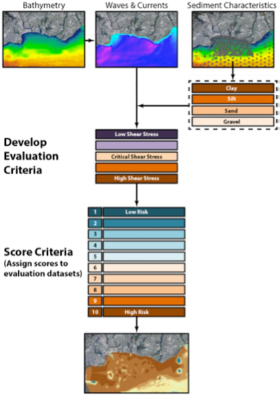
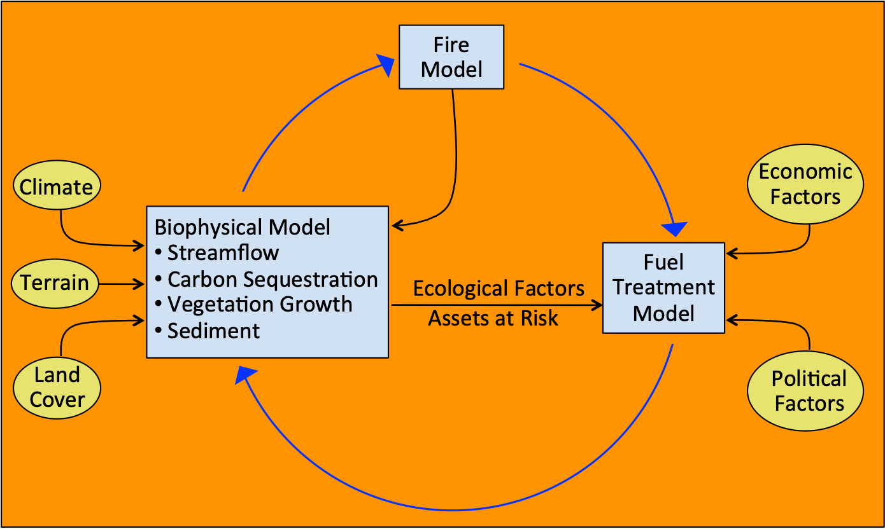
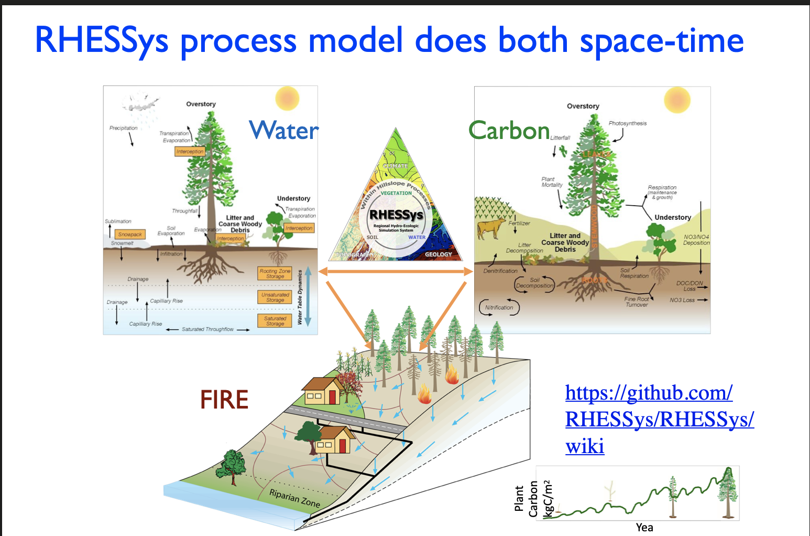
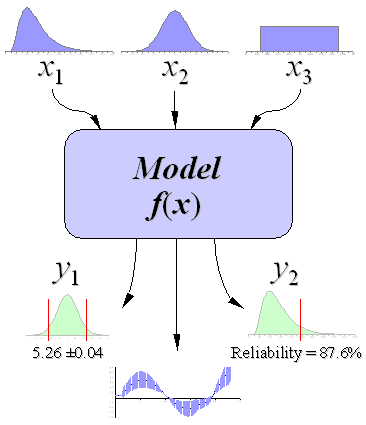
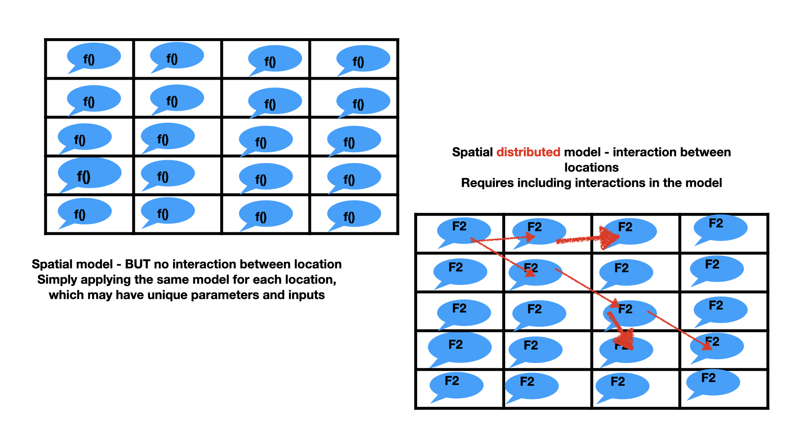
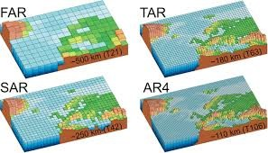
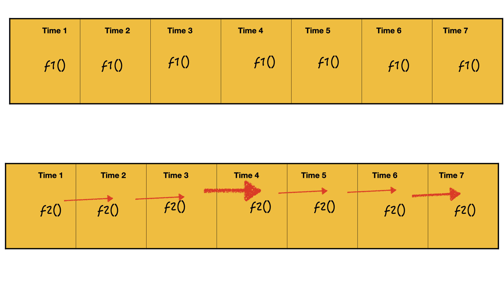
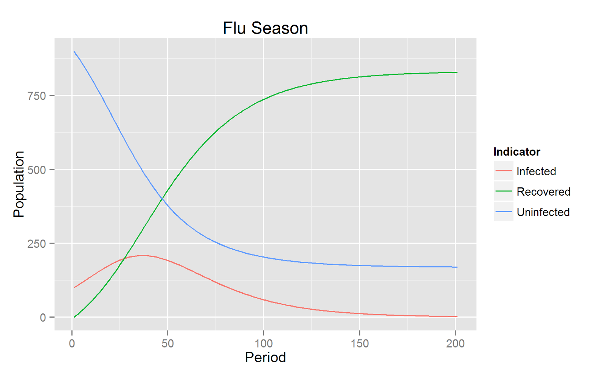
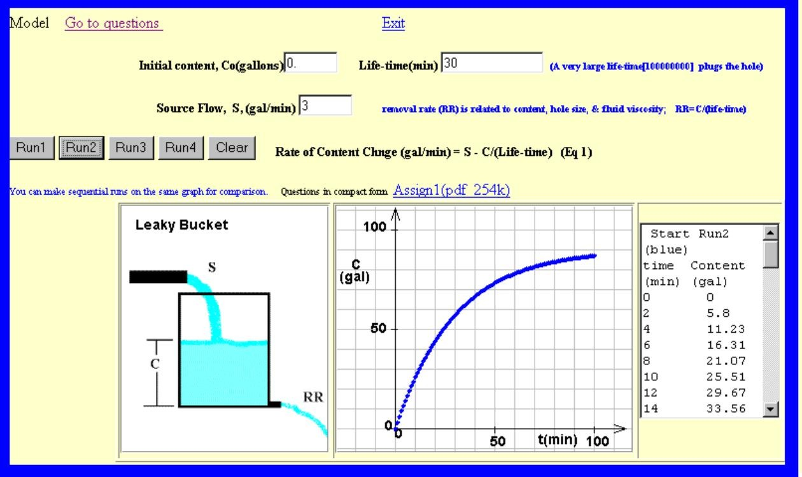

Types of Models
Model Goals
understanding
prediction
communication
You are doing this all the time - there are many reasons to make this process explicit (computer aided modeling)
Inverse inference problem in the context of the environment
Pair-Share
Conceptual Models
models are always simplifications of reality - they help us to make sense of reality by focusing on specific aspects that are most relevant to your goal
always start a modeling project by diagramming your conceptual model - how do you see the system;
from here you design or choose your ‘actual’ model
in a project, it is critical to dialogue to agree on the conceptual model
Getting to a good conceptual model
Know what the goal is of your modeling project - precisely
Use that to decide what to include/exclude
Define inputs and outputs
Some definitions
Inputs : Varying; think x of a x vs. y regression
Parameters : single values that influence relationships in the model
Outputs : what you want to estimate
Simple model
Input : Change in unemployment rate
Output : Change in GDP
Parameters : Slope and intercept of the line
The US “changes in unemployment – GDP growth” regression with the 95% confidence bands.

Goals
The goal will help you to define the core pieces of a model
Often helpful to start at the end: Outputs
Problem: how will forest carbon sequestration change if fire frequency increases with warming
- What might be the outputs of a model?
- What might be the assumptions
Example1
Outputs: carbon sequestration for different fire frequencies
Assumptions..stand-age versus carbon trajectories won’t change with warming
Goals - Example 2
Problem: which piece of land should be purchased to maximize biodiversity?
Goals - Example 2
Outputs: monetary costs and benefits of different options in 2015 dollars, including “non-market” benefits
Assumptions: non-market benefits are reflected by ..
Conceptual Models
This is the MOST important step
Models are simplifications of reality
What processes in complex reality are your going to consider? why?
What is in the “box” that translates inputs to outputs?
Good questions for statistical and machine learning models - why?
Things to think about
Inverse Inference - what mechanisms, parameters, inputs leads to the response you are observing (understanding)
What processes do you expect to be significantly influence outcome you are interested in (prediction)
How do you “show” what influences an observation/prediction (communication)
Inverse Inference Example
A city health department observe asthma hospitalization rates in a specific neighborhood hospital are twice as high as average rates in that state
An amphibian (salamander or newt) population has declined in the Santa Monica Mountains
Pick one - Quickly summarize what comes to your mind as the in inverse inference (conceptual) model that leads to this finding.
Write your answer in Quiz Inverse Inference on Canvas - you are brainstorming here - no need to “research”
➡️ Canvas Quiz
Inverse Inference Quiz
Whats in the box
Often more complicated than a simple single equation - such as a multiple regression equation
Relationships and Processes
Can be even more complex - what is connected with what and when
What are some time-space relationships we might have to think about?
Some possible extensions to conceptual model
Relationship between the timing of precipitation and newt lifecycle.
If there is a particular pollution source - prevailing wind patterns and how long particles stay in the air
pollution at time lag t-1 weighted by wind direction and speed (model of pollution transport)
\(\beta_5\) vulnerability to pollution varies with newt life stage (eggs more vulnerable than adults)
population age structure (Pop_newt_eggs, Pop_newt_juvenile, Pop_newt_adult) - all varying through time
Composing Diagrams
Pictorial representation your model and what needs to be included in the model to answer your questions (or achieve your modelling goal)
There are many software tools available for generating conceptual models, I like
Example of a hydrology model (conceptual diagram)

PhD of Norman Crawford under supervision of Ray K Linsley at Stanford University in 1962
Example of a model to classify harzard risk

Example more complex model - Fire Regime Model
More complex model couple sub-models ( may be a loose coupling where users connects submodels)
How do ecological and human factors interact to influence fire regimes

expansion on one of theh ‘boxes’

Conceptual Models: Things to think about
What inputs/parameters will influence how a process/mechanism leads to the outputs you are interested in
Can you measure those inputs/parameters? If not is there a proxy? Or another model?
Are there features of the environment that influence the relationship between input/parameter and output?
Are there inputs/parameters that you want to vary across cenarios (things you’d want to ‘change’)
Time and Space (are you looking at a short or long terms behavior? do you care about spatial patterns? at what scale?)
What are some key assumptions?
Types of Model
There are many different ways to classify models
A useful classification looks at how models deal with space, time, and process
Useful because the type of model will have implications for how you build and use/run the model
Stochastic - Deterministic
Stochastic: Model output is the probability of flood events of a magnitude greater than 500 m3/sec given rainfall probability distribution (artificial or generated from data) for a 100km2 watershed
Deterministic: Model output is the depth of flood given a rainfall event of 10cm over a 100km2 watershed
Stochastic - Deterministic

stochastic-deterministic
Lumped …Spatially distributed
Lumped - single point in space, or space doesn’t matter
Spatially distributed - model is applied to different “patches” in space
- spatial units are independent
- spatial units interact with each other

Climate models are good examples of spatially distributed models

Resolution matters for spatial models
Static- Dynamic Time Varying
Static - Processes or Variables modeled do not evolve with time
Dynamic - model elements evolve through time - variables/results at one time step typically depends on previous time step

Example of a time varying (dynamic) model
Modeling disease through time

Abstract - Physically/Process based
Abstract - relationship between inputs and output depends on parameters that don’t necessarily have a physical meaning - machine learning models are good examples
Physically based - parameters do have a physical meaning (could be measured) - relationships derived from first principles (theory) of how things work
Physically based can be “approximate”
Think…simple bucket model

Why the type of models matters
- assumptions
- implementation
- output
- format
- analysis
- visualization
Assignment 2 - Due Jan 13th 8am
Develop a Conceptual Model
- Form groups of 3
- With your group, come up with a modeling goal
- Decide if the goal is understanding,prediction or communication
- Brainstorm on important
- inputs, parameters and outputs
- relationships/processes
- assumptions